Publications
Full list of research publications. See also Google Scholar for the latest updates.
Multimodal Change Detection

Earth System Science Data (ESSD), 2025
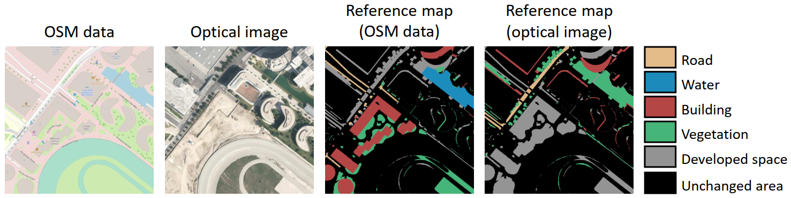
IEEE Transactions on Geoscience and Remote Sensing (TGRS), 2024
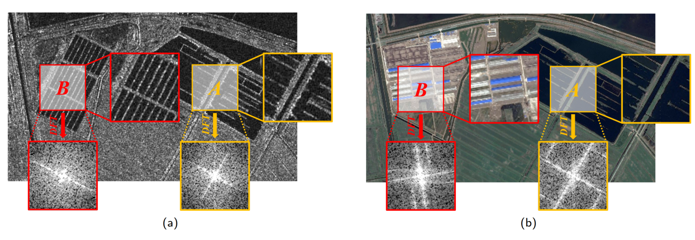
Fourier Domain Structural Relationship Analysis for Unsupervised Multimodal Change Detection
ISPRS Journal of Photogrammetry and Remote Sensing, 2023
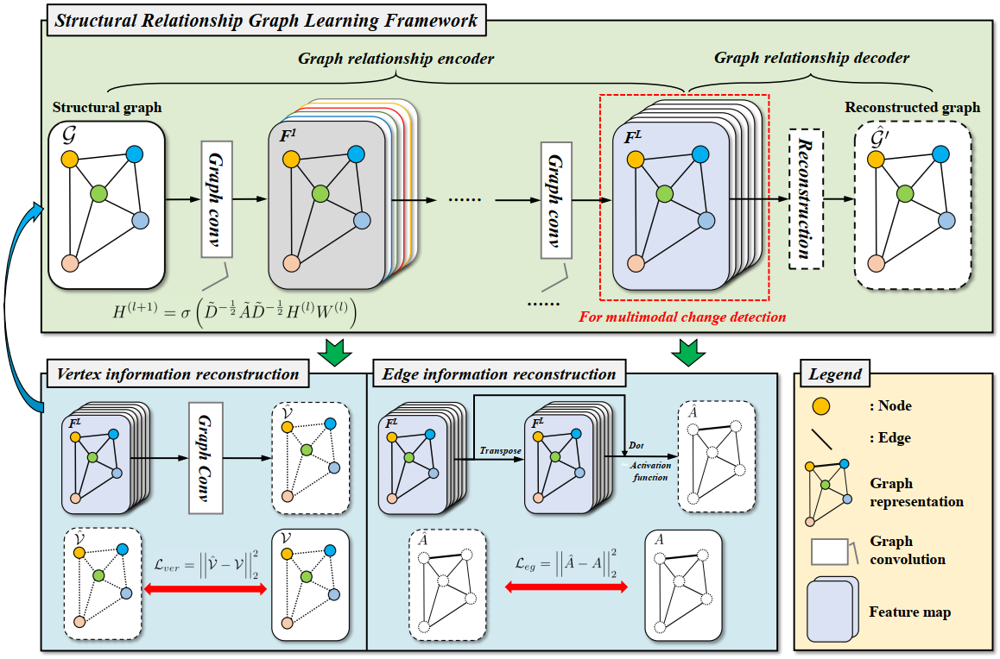
IEEE Transactions on Geoscience and Remote Sensing (TGRS), 2022
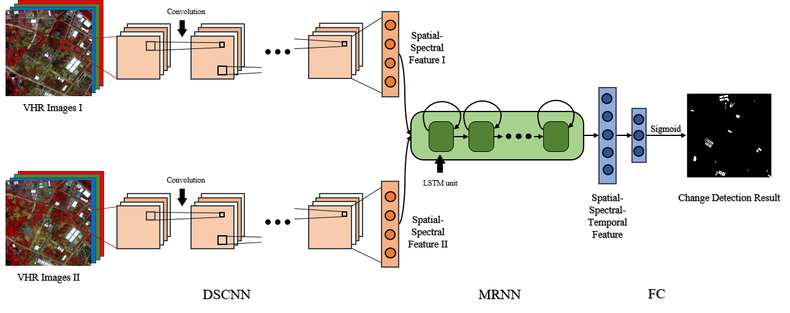
IEEE Transactions on Geoscience and Remote Sensing (TGRS), 2020
Unimodal Change Detection
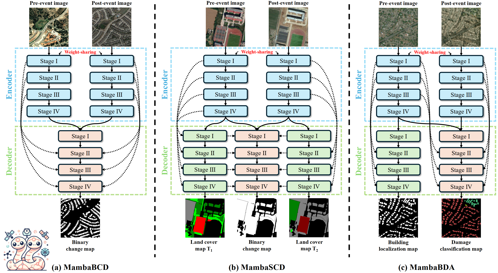
ChangeMamba: Remote Sensing Change Detection with Spatio-Temporal State Space Model
IEEE Transactions on Geoscience and Remote Sensing (TGRS), 2024
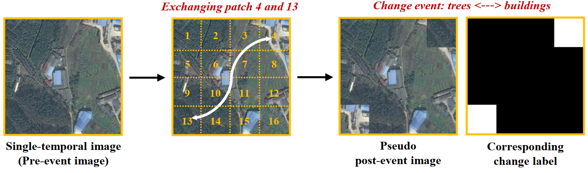
ISPRS Journal of Photogrammetry and Remote Sensing, 2023

IEEE Transactions on Cybernetics (TCYB), 2021
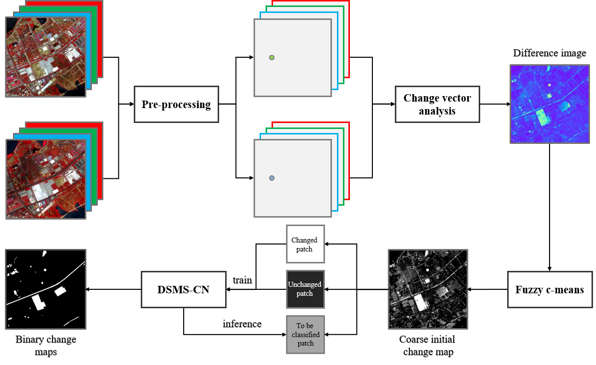
Spatial-Temporal Discriminative Learning for Aerial Scene Recognition
IEEE Transactions on Geoscience and Remote Sensing (TGRS), 2020
Multitemporal Image Analysis & Application
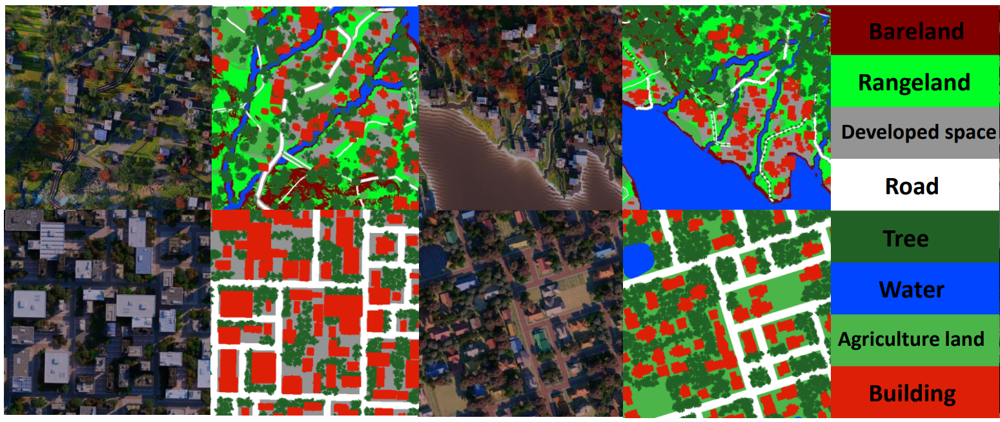
SyntheWorld: A Large-Scale Synthetic Dataset for Land Cover Mapping and Building Change Detection
IEEE/CVF Winter Conference on Applications of Computer Vision (WACV), 2024
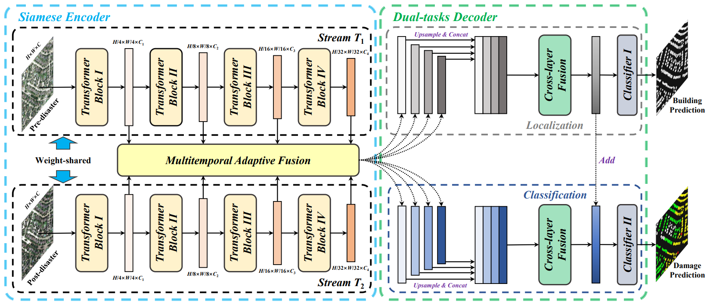
Dual-Tasks Siamese Transformer Framework for Building Damage Assessment
Proceedings of IEEE IGARSS, 2022
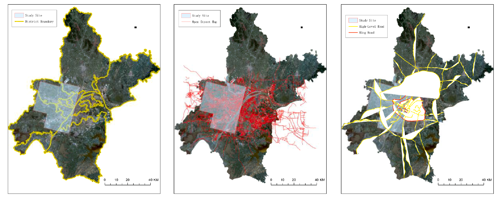
International Journal of Applied Earth Observation and Geoinformation (JAG), 2021
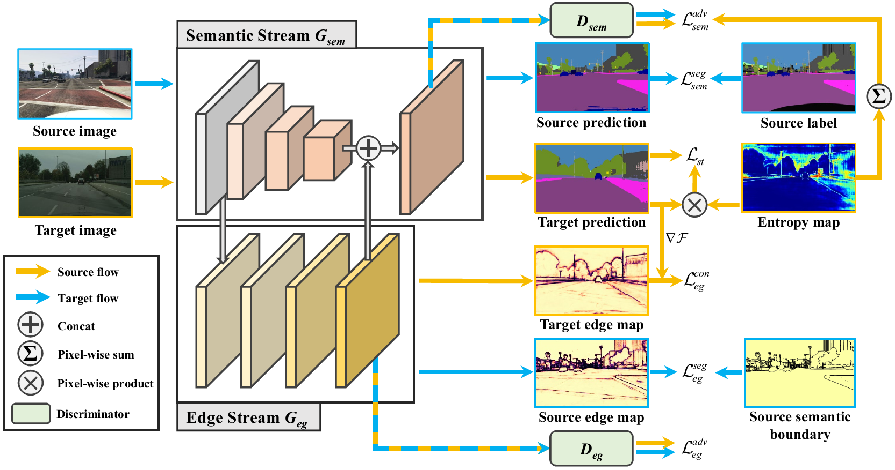
Semisupervised Change Detection Using Graph Convolutional Network
IEEE Transactions on Geoscience and Remote Sensing (TGRS), 2021
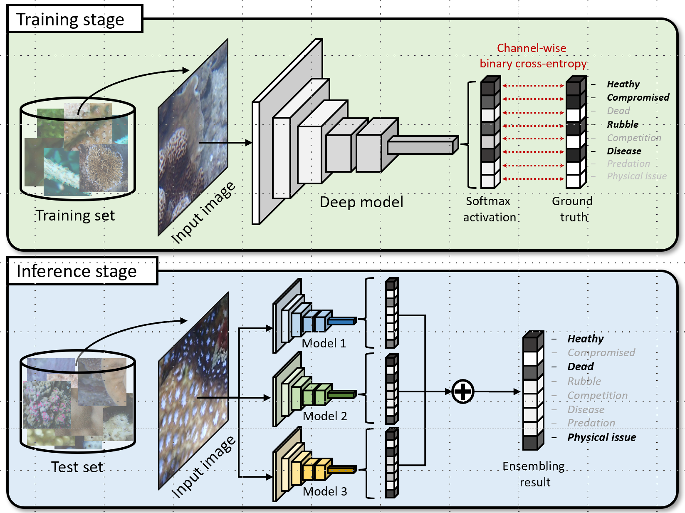
Coral Reef Condition Monitoring with Very High Spatial Resolution Satellite Images and Deep Learning
ISPRS Journal of Photogrammetry and Remote Sensing, 2023